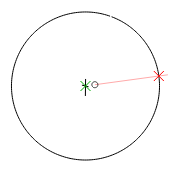

Gauss-17 is an HTML5 canvas based compass and straightedge drawing tool. It allows users to practice compass and straightedge constructions with sub-pixel accuracy. Unique to this tool is the automatic calculation of line intersections and the ability to "snap" drawing tools to those intersections. At its core, Gauss-17 is a basic 2-D CAD program with a very limited toolset and a user interface that mimics the use of standard compass and straightedge tools.
Using a compass and straightedge, the ancients knew how to construct triangles, squares, and pentagons, and any figure that comes from dividing those sides by two (hexagons, octagons, 10-gons, etc.). In 1796 Gauss proved that it was possible to construct a 17-gon and 5 years later he gave a formula for a set of N-gons which are construtible (these were later proven to be the only constructible N-gons). The mathematics behind constructible angles is worth a read.
Tool selection is accomplished using the tool radio buttons. Available tools are: compass, straightedge, and selection. The compass tool is used for drawing circles and circle segments, the straightedge is used for drawing line segments, and the selection tool is used for selecting drawn objects, primarily for deletion.
The curser can be set to "snap" to intersections, lines, circle segments, and center points of circles. This allows for precise compass and straightedge placement and settings. There are times where snapping to an intersection, for example, can interfere with the desired placement of a tool, so this "snapping" behavior can be turned off with the appropriate checkboxes.
The compass tool has two points which define the settings. To set the compass center point, drag the green X to the desired center. To set the radius, drag the red X point to the desired distance from the center point. Once the radius has been set, moving the green center point will maintain that radius. To draw a circle segment, click and drag anywhere (except on the red or green X) to start tracing out the circle segment. Release the mouse to finish drawing. Notice the mouse curser follows the compass circle as you move the mouse around the center point.
The straightedge tool also has two points which define the settings. Drag the red and green points to the desired location to define a line. To draw a line segment, click and drag anywhere (except on the red or green X) to start tracing out the line segment. Release the mouse to finish drawing. Notice the mouse curser follows the defined line as you move your mouse on the screen. If trying to draw a line between two points (with the red and green X marks on those points), it is often helpful to start tracing from the middle of the line, then drag toward one X and then toward the other.
The selection tool is used primarily to select a drawn object to then be deleted. To select an object, click near the object. The selected object will be drawn in red. To delete the object, click the "Delete" button on the screen.
Aside from creating circles and line segments as described above, other basic operations include: constructing a diameter of a circle, finding the midpoint between two points, constructing a perpendicular line, and bisecting an angle.
By default, this tool will allow you to snap a tool to the center of drawn circles and circle segments. Creating a circle diameter is then easy. First use the compass tool to draw a circle. Then with the line segment tool selected, snap one point to the circle center and the other to any point on the circle. Use these settings to draw a line through the circle. The segment between where this line intersects the circle is a diameter. The segment from the circle center to the edge is a radius.

Alternately, if you aren't able to snap to the center of a circle, you will first need to have a point defined for the center of the circle. This can be done by intersecting any two lines. After the center has been defined, proceed as above using the intersection as the center of the circle. Only a portion of the diameter has been shown here.
To create a midpoint between two points A and B, first draw the line segment AB. Next set the compass to be centered at A with radius larger than the half the length of AB. Draw a circle (or segments) from one side of AB to the other side. Keeping the radius of the compass the same, draw another circle (or segments) with the compass centered at B. The two circle segments intersect at points P and Q. Select the straightedge tool and and place the X marks on point P and Q. Draw a line segment which crosses AB. The intersection of this line segment with AB is the midpoint of AB.
Constructing a perpendicular line at a point P is very similar to finding a midpoint, but in reverse. Center the compass tool on point P on a line and create points A and B on the line, equidistant from point P. Center the compass on point A with radius larger than AP. Draw a segment of the circle on one side of the line. Keeping the radius of the compass the same, center the compass at B and draw another segment of a circle. Call the intersection of the two circle segments Q. Select the straightedge tool and place the red and green X marks on points P and Q. The line segments drawn with these settings will be perpendicular to the original line.
Given two lines that intersect at point P, the angle between these lines can be bisected. Center the compass tool on point P and create points A and B on the two lines, equidistant from point P. Next center the compass on point A (the radius need not be the same as before) and draw a circle segment near the middle of the angle. Do the same with the compass centered at point B. Call the intersection of the two circle segments Q. Select the straightedge tool and place the red and green X marks on points P and Q. The line segment drawn with these settings will bisect the angle APB.
{kind=link}